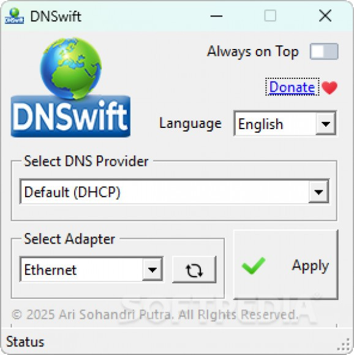

Switch between DNS providers or set custom DNS servers instantly with this lightweight tool.
DNSwift is a lightweight DNS management utility that makes it easy to switch between DNS servers in a fast and secure manner. Whether you're looking to improve browsing speed, enhance privacy, or troubleshoot network issues, DNSwift provides a streamlined interface to help you change your DNS settings with minimal effort.
The application comes preloaded with a collection of trusted public DNS servers, allowing users to select and apply them instantly. For those who prefer a custom setup, DNSwift also supports manual configuration, enabling you to define your own DNS server pairs with ease.
With its compact, always-on-top interface and one-click operations, DNSwift is designed for convenience. You can view and select DNS profiles in seconds, making it an ideal tool for both casual users and network-savvy professionals who require quick changes to network configurations.
Whether you're aiming to block ads, bypass region restrictions, or simply speed up your DNS resolution, DNSwift is a dependable and user-friendly solution to take control of your internet connection.
Access a built-in list of popular and secure DNS servers like Google DNS, Cloudflare, OpenDNS, and more.
Easily add and manage your own DNS server addresses based on your needs or preferences.
Compact design with no installation required — ideal for quick use on any Windows system.
